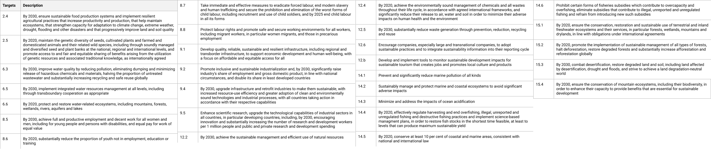
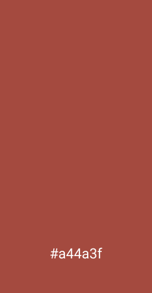
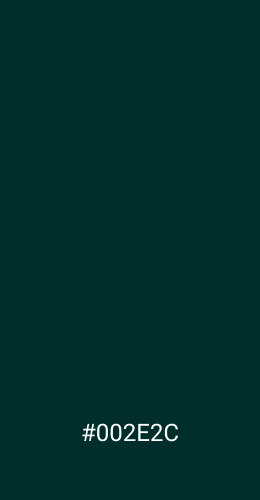
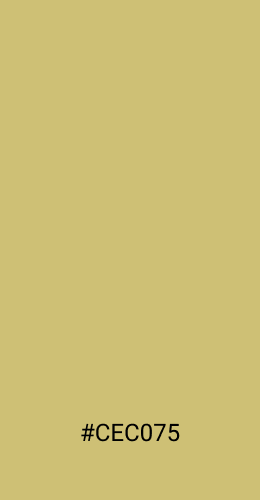
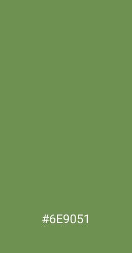
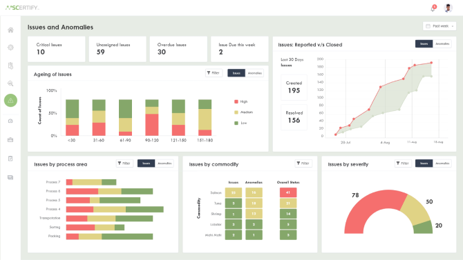

Scertify Scoring System & Dashboard Design
Overview
Scertify is a service offered by Athena Advisory to assist companies build and manage their
sustainability program.
I conducted research on the United Nations Sustainable Development Goals (SDG) and other
sustainability standards and certifications, developed the foundations of its scoring system, and
designed the dashboard.
Role
UX Researcher
Date
May 2021 - Aug 2021
Company
Athena Advisory
Background
Athena Advisory's Scertify platform helps companies manage and track and their sustainability programs end-to-end by fully integrating key enterprise processes, systems and data, including ERP, sourcing, procurement and supply chain management. Scertify removes barriers that prevent companies from collecting and verifying their sustainability data through ongoing monitoring and assessment of sustainability compliance across networks of suppliers. Through advanced analytics and AI, Scertify increases the user's stakeholder trust and engagement.
The Challenge
- Corporations are pressured by the governments, NGOs, ESGs and consumers to focus on the "triple bottom line" - profit, people and planet.
- Consumers demand more transparent and thorough insights into the ethical sourcing and environmental compliance of ingredients of the products and services they purchase.
- Brands want to protect their credibility and consumers' confidence against recalls, environmental carelessness, fraud, and human rights violations.
- Investors are looking to reduce adverse exposure and risk by better aligning their portfolios to ESG goals in response to growing regulatory requirements and backlash for greenwashing by funds and asset managers.
The Solution: Blockchain-based Tracking and Traceability System
Scertify helps companies establish strategies and verify achievements of programs that contribute to environmental, social and governance (ESG) causes.
- Identify the right environmental, social, and governance goals and measures for the organization, products, and supply chains.
- Verify the sustainability of the supply chain in real-time.
- Reinvent the supply chain practices and processes for efficiency, profitability, and ethical standards.
Design Process
Problem Space
Scoring System Research
Sustainable Development Goal Targets
The first step to develop the Scertify Scoring System was to select SDG targets that represent the company's mission based on the internal dicussion and review.
Selected SDG Targets
After reviewing the relevant SDG Targets, I studied and documented the certification standards of
the Marine Stewardship Council, Best
Aquaculture Practices, and Fair Trade. Then, I reviewed whether these certificates cover the
critical values of the Athena Advisory's current pillars: Social, Environmental, and Ethical. Note
that it
says current because "Food Safety" may be added.
Focus Questions
- ► How do the currently existing certification organizations, such as MSC, BAP and Fair Trade, address the United Nations Sustainable Development Goals?
- ► What parts are adequately covered and what parts need intervention?
Our team, Chris, Rob and I discussed and decided on assigning United Nations Sustainable Development Goal and the relevant subgoals to one of these four categories: Core to SCERTIFY, Optional, Maybe and No. We eliminated the ones that should be addressed at the national level and tried to stay in the realm of corporate responsibilities.
Branding
Based on the initial design guide, brand attributes and corporate goals were discussed and developed.
Deliberation Points
- What kind of brand are we? How do we describe ourselves?
- What feelings do we want to evoke?
- What voice do we represent?
- Who are the target audinece? How do we attract them?
- How do we want to differentiate?
The keywords are: "Organic" and "Natural."
At the same time, we want to feel modern and professional.
Decided Color Palette
The following color palette was created with consideration of the mission statement and brand attributes.
   Supplier Compliance Dashboard
Focus Questions
What does the client want to see on the suppliers tab?
What information needs attention? What should be more emphasized?
Information to be included
- • Number of suppliers
- • Total volume
- • Total value
- • Percentage supplier compliance
- • Supply chain map
Considerations
From the target user's perspective, the questions that are of the greatest interest were considered when developing the dashboard design.
- What are the supplier-based issues that are most at risk?
- Who are the problematic suppliers?
- What action can I take to improve the supplier state?
With these considerations in mind, I came up with some suggestions to the existing graphs and constributed some new ideas. I have included a few of which here.
Suggestion to an existing graph: Instead of profit/quantity, profit/compliance level or current complaince/improving status would be more useful to visually highlight the problematic suppliers on the graph.
New idea: Based on the compliance level, the top five most compliant and bottom least compliant companies can be displayed. When hovered, each bar graph can display some essential information about the company, and wehn clicked, can direct to the individual company's page.
For Supplier Compliance Report page, I combined the overall supplier compliance, supplier compliance details, and commodities' compliance status charts into a one-page experience.
Reflection
For this project, I got to venture into an unfamiliar territory of supply chain for this project.
I enjoyed learning about the sustainability situations, practices, problems, regional regulations,
and global standards.
I had to first develop an understanding of the industry and UN SDG targets in order to come up with
a foundataion that can measure sustainability to balance corporate interests and environmental and
ethical standards.
Concerning various stakeholders with sometimes conflicting interests, the balancing work and
prioritization were especially challenging.
It was also my first time designing dashboard with an emphasis on data representation outside
coursework.
I shifted my focus from pure data storytelling work, highlighting the most significant piece of
data, to user-centered data storytelling, asking questions about what does the client want to see
and how to deliver the information most effectively.